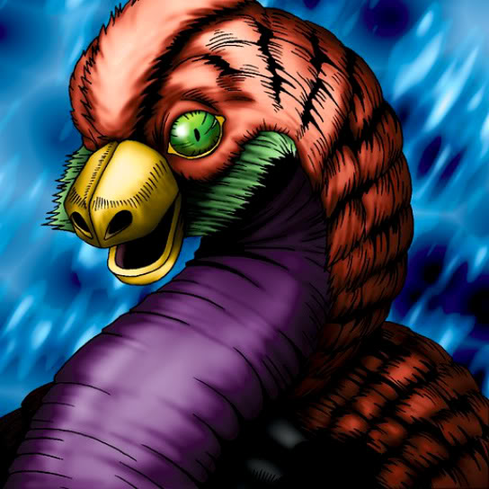

Dig Beak

STATS
ATK: 500
DEF: 800DECK COST
Deck Cost per Card: 13Fusion List (7 Possible Fusions)
- Dig Beak + Ancient Brain = Garvas
- Dig Beak + Cyber Soldier = Dice Armadillo
- Dig Beak + Dancing Elf = Garvas
- Dig Beak + Petit Angel = Garvas
- Dig Beak + Princess of Tsurugi = Nekogal #2
- Dig Beak + Queen of Autumn Leaves = Nekogal #2
- Dig Beak + White Dolphin = Tatsunootoshigo